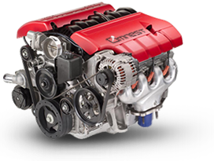

The OMNEST™ Simulation Engine is a C++ library that can be integrated into your application to provide simulation capabilities. Models can be developed and tested in the OMNEST Simulation IDE, then compiled into your application without any changes.

The following companies have chosen to embed OMNEST™ technology:
MEGA Corporation has embedded OMNEST™ simulation technology into its MEGA Process business process simulation product. MEGA Process 6.1 utilizes OMNEST™ simulation kernel. Read the press release. |
|
European Aeronautic Defence and Space Company. |